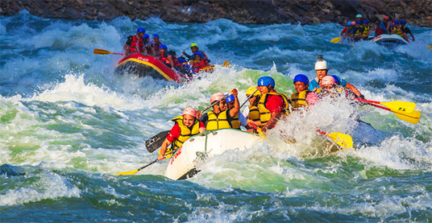

At Adeshina Rafting, our mission is to deliver thrilling and safe water adventures while creating unforgettable memories for every guest.

At Adeshina Rafting, our mission is to deliver thrilling and safe water adventures while creating unforgettable memories for every guest.
Adeshina Rafting was founded with a passion for adventure and a love for nature. What started as a small idea among friends quickly grew into a trusted name for exciting and safe rafting experiences. Over the years, we have welcomed people from all walks of life, helping them explore the beauty of the river while creating unforgettable memories.

Our goal has always been simple — to combine fun, safety, and professionalism in every trip we offer. With experienced guides and a deep respect for the environment, Adeshina Rafting continues to provide thrilling adventures while preserving the natural beauty that makes every journey special.